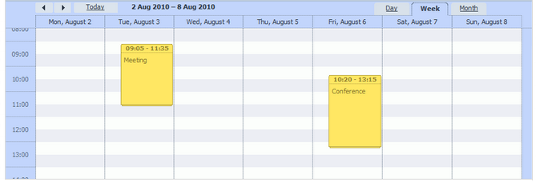

Live Update is a mode that provides synchronous data update in real time. When one of the users makes a change, it becomes visible to all others immediately. The mode uses the Faye socket library to make the process as fast and flexible as possible and doesn't require page refreshes (updates just a component it's applied to).
In this article we would like to give you a step-by-step tutorial to quickly dive into the topic.
To start this tutorial you must have a complete running dhtmlxScheduler application integrated with the server side, i.e. one that loads data from DB and saves changes back (see details here).

Shortly, the code of this app can look like this:
<script>
function init() {
scheduler.init('scheduler_here',new Date(2019,5,24),"week");
scheduler.load("api/scheduler");
var dp = new dataProcessor("api/scheduler");
dp.init(scheduler);
dp.setTransactionMode("REST", false);
}
</script>
The first requirement of the mode - having Node.js installed and running.
The essential requirement of the live update mode is having the Node.js platform (event-driven I/O server-side JavaScript environment based on V8) installed and running. That's why, by your first step you must set up Node.js.
We won't go into detail on setting up the platform ( as it really doesn't concern the main purpose of this tutorial) and confine ourselves to mentioning just the common technique:
Other required information on this topic you can read on the respective sites, e.g. here - https://nodejs.org/.
To work with the live update mode, 2 additional files must be included. They are:
<script src="codebase/live_updates.js" type="text/javascript"></script>
<script type="text/javascript" src="http://localhost:8008/sync.js"></script>
The mode is enabled by calling method live_updates() for the dataProcessor instance. That's why the other essential requirement is having dataProcessor initialized. As a parameter, the method takes the path to JS server.
var dp = new dataProcessor("api/scheduler");
dp.live_updates("http://localhost:8008/sync");
dp.init(scheduler);
dp.setTransactionMode("REST", false);
The demo application you can download here.
Back to top